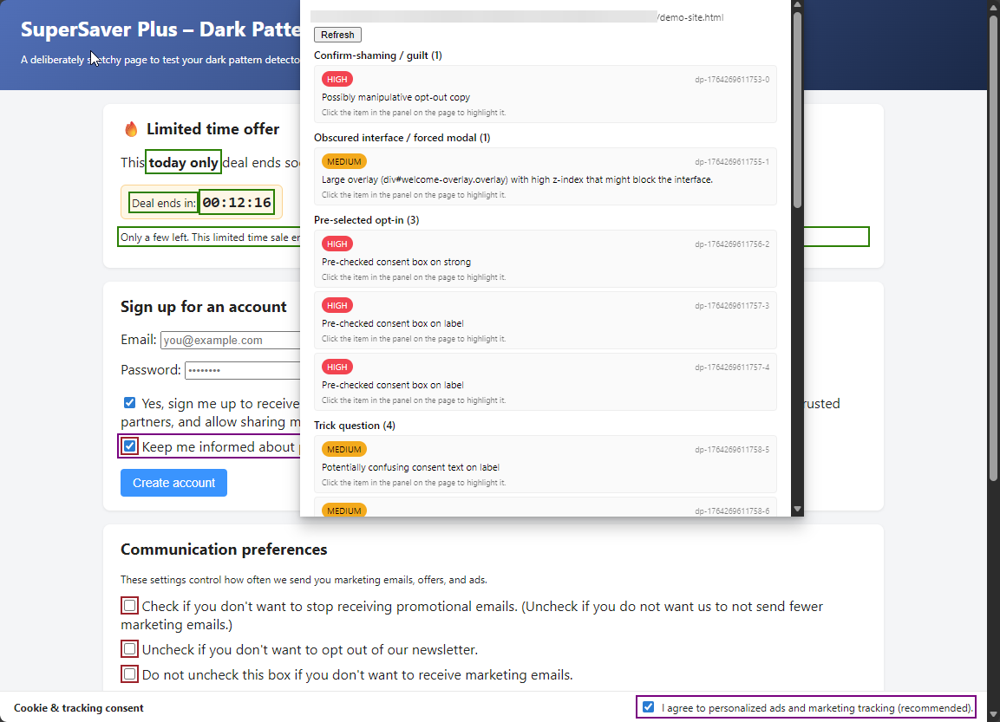
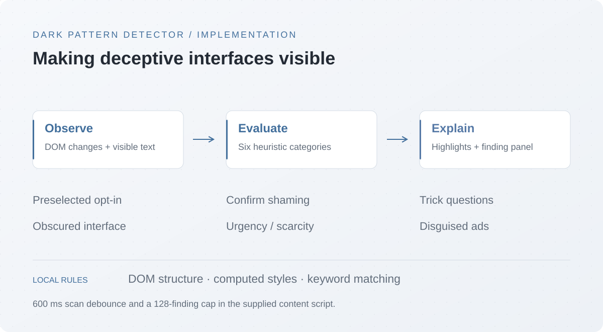

SECURITY / HUMAN-CENTERED COMPUTING
Dark Pattern Detector
A browser extension that makes manipulative interface patterns easier to notice, inspect, and question.
- Context
- Browser extension project
- Project status
- Heuristic detector implementation
- Tools & methods
- JavaScript · Chrome Extension APIs

- Platform
- Chrome · Manifest V3
- Detection
- Six heuristic categories
- Research
- Course team project · Fall 2025
The problem
Consent prompts, scarcity messages, and misleading opt-outs can steer people into choices they did not intend to make. This course team project explores a lightweight browser extension that flags suspicious interface elements and explains what triggered the warning.

What the implementation does
- Scans visible text, DOM structure, and computed styles across six categories: confirm shaming, obscured interfaces, preselected opt-ins, trick questions, urgency/scarcity cues, and disguised ads.
- Highlights matching elements and groups the findings in an in-page panel; the extension popup requests a sanitized findings list.
- Uses a MutationObserver to schedule rescans after added or removed nodes. Scans are debounced by 600 ms, with a cap of 128 findings.
FROM THE SOURCE
Responding to a changing page
A short debounce delays scanning until successive DOM changes settle. The finding cap bounds the number of recorded detections.
function scheduleScan() {
if (totalFindingsCount >= MAX_FINDINGS) return;
if (scanTimeout) clearTimeout(scanTimeout);
scanTimeout = setTimeout(scanPage, 600);The research behind the interface
The Fall 2025 progress report proposes a counterbalanced, within-subjects evaluation: participants complete browsing tasks with the extension off and on. Planned measures include completion time, errors, task success, perceived control, and usability.
The supplied report is an evaluation plan, not a results paper. Optional local-model inference and broader controls appear in the proposal; the showcased source implements heuristic detection.
Course team: Kareem Mahmoud, Adham Elmosalamy, and Adel Abdelmoaty · COE 49414, Human Privacy and Security · American University of Sharjah.
Resources
Original project documents.